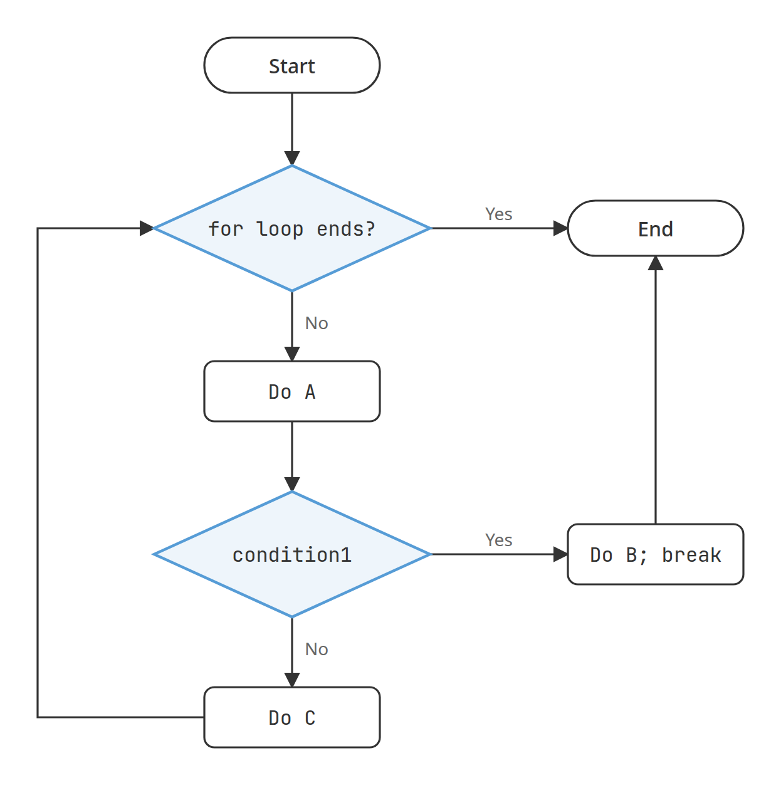
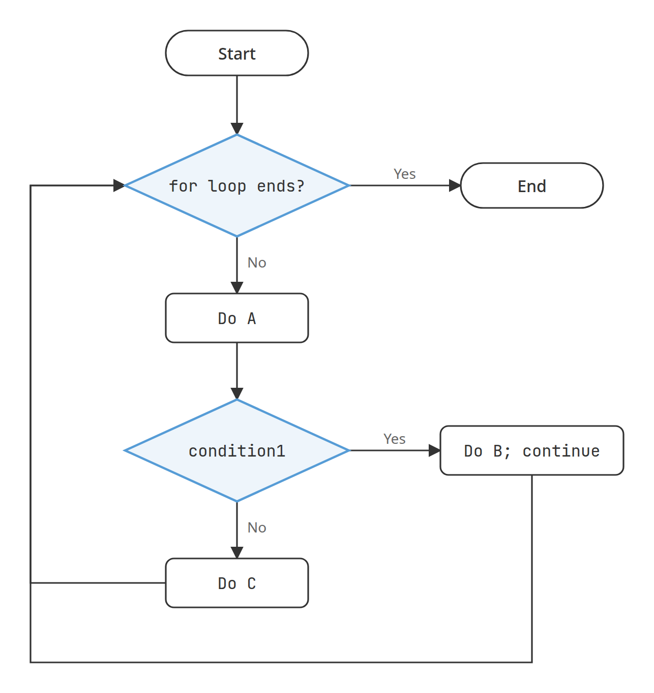

目前為止，我們學到了基本的 for 迴圈，也就是僅對一個可迭代物件進行迭代。當一個迴圈裡面還有另一個迴圈，這時就形成了巢狀迴圈，最基本的例子就是九九乘法表，每個被乘數都對應到 9 個乘數，當被乘數和 9 個乘數都計算完了之後，才換下一個被乘數，不斷迴圈直到每個被乘數和乘數都計算過。另一個 for 迴圈的應用是將串列和 for 迴圈結合，使用串列綜合運算（list comprehension）的方式生成串列，讓程式的可讀性更高也更精簡。
巢狀 for 迴圈的基本語法如下：
for item1 in object1:
for item2 in object2:
Do something to each item1 and item2以製作一個九九乘法表當作例子，程式執行時，會先從外層迴圈取得 range(1, 10) 裡的第一個元素 i = 1，接著進到內層迴圈，依序取得 range(1, 10) 裡的每一個元素，也就是 j = 1 到 j = 9，分別執行 print() 裡面的內容，全部執行完畢後，才會再返回外層迴圈，取得 range(1, 10) 裡的第二個元素 i = 2，以此類推，直到內、外層迴圈的所有元素都迭代完成。
執行結果如下：
1*1=1 1*2=2 1*3=3 1*4=4 1*5=5 1*6=6 1*7=7 1*8=8 1*9=9
2*1=2 2*2=4 2*3=6 2*4=8 2*5=10 2*6=12 2*7=14 2*8=16 2*9=18
3*1=3 3*2=6 3*3=9 3*4=12 3*5=15 3*6=18 3*7=21 3*8=24 3*9=27
4*1=4 4*2=8 4*3=12 4*4=16 4*5=20 4*6=24 4*7=28 4*8=32 4*9=36
5*1=5 5*2=10 5*3=15 5*4=20 5*5=25 5*6=30 5*7=35 5*8=40 5*9=45
6*1=6 6*2=12 6*3=18 6*4=24 6*5=30 6*6=36 6*7=42 6*8=48 6*9=54
7*1=7 7*2=14 7*3=21 7*4=28 7*5=35 7*6=42 7*7=49 7*8=56 7*9=63
8*1=8 8*2=16 8*3=24 8*4=32 8*5=40 8*6=48 8*7=56 8*8=64 8*9=72
9*1=9 9*2=18 9*3=27 9*4=36 9*5=45 9*6=54 9*7=63 9*8=72 9*9=81內層迴圈的 print() 加上 end=" "，所以同一個被乘數的 9 個算式會排在同一行；內層跑完之後，外層的 print() 才換行。f-string 大括號裡的 {i*j:<4}，冒號後面的 <4 代表「至少占 4 個字元寬、靠左對齊」，乘積不足 4 位數時會在右邊補空白，每一欄才會對齊。
巢狀迴圈的內外層，迴圈變數要取不同的名字。如果內層也用 i，內層每一輪都會讓 i 改指向新的值，外層在內層跑完之後拿到的 i，就已經不是原本的值了：
執行結果：
外層開始：i = 1
內層：i = 1
內層：i = 2
外層結束：i = 2
外層開始：i = 2
內層：i = 1
內層：i = 2
外層結束：i = 2
外層開始：i = 3
內層：i = 1
內層：i = 2
外層結束：i = 2外層一樣跑了 3 輪，因為外層每一輪開始時，都會從 range(1, 4) 取出下一個數字重新指定給 i；但每一輪在內層跑完之後，i 都停在內層最後的 2。如同第 06 章〈迴圈結束之後的迴圈變數〉提到的，迴圈結束之後迴圈變數會停在最後一輪拿到的值，內層迴圈也不例外。如果外層在內層之後還要用到 i，結果就會出錯。
在迴圈中，有時當滿足了一些條件，我們不希望迴圈繼續執行下去，需要跳出迴圈，這時可以使用 break 指令，其基本流程與語法如下：

condition1 成立時執行 Do B 後直接跳到 End，不再回到迴圈開頭for item in object:
Do A
if condition1:
Do B
break
Do C在以下範例，我們利用 random.randint() 函數隨機生成十個 0～100 區間內的整數並存成串列，再經過串列的 sort() 方法將十個整數由大到小依序排列，並輸出大於 60 的整數。此例子中，由於已將串列內的整數由大到小排列，因此在 for 迴圈中，當 if 條件判斷到數字不大於 60 時，即可進入 else 區塊，執行 break 指令跳出迴圈。
執行結果：
[97, 97, 72, 63, 60, 57, 32, 17, 15, 8]
97 97 72 63這裡用了第 08 章的 random.seed(1) 固定種子，所以每次執行都會產生同一串數字，方便對照結果。第一個 for 迴圈只是用來重複執行十遍，迴圈變數用不到，因此同樣取名為底線 _。第二個 for 迴圈印到 63 之後，下一個數字是 60，不大於 60，於是執行 break 跳出迴圈，後面的 57、32 等數字就不會再檢查了。
sort() 方法sort() 會把串列裡的元素由小到大排列，加上 reverse=True 則改成由大到小。它和第 07 章的 shuffle() 一樣，是直接修改原本的串列，並不會回傳一個新的串列，因此把它的結果印出來只會得到 None：
執行結果：
None
[1, 2, 3]
[3, 2, 1]在巢狀迴圈裡，break 只會跳出它所在的那一層迴圈，外層迴圈會繼續執行下一輪：
執行結果：
i = 1, j = 1
i = 2, j = 1
i = 3, j = 1每一輪內層迴圈到 j == 2 時就被 break 跳出，所以 j 只印到 1；但外層迴圈並沒有被跳出，i 仍然從 1 跑到 3。
for 迴圈後面也可以接一個 else 區塊，它只在迴圈沒有被 break 跳出、正常跑完全部元素時才會執行。以下兩段程式只差在串列的最後有沒有 60：
執行結果：
All scores are above 60
Found 60第一段的每個分數都大於 60，迴圈沒有遇到 break，跑完之後執行了 else 區塊；第二段遇到 60 時執行 break 跳出，else 區塊就被跳過了。注意這個 else 和 for 對齊，是屬於 for 迴圈的，跟第 04 章和 if 對齊的 else 不同。
在迴圈中，有時當滿足了一些條件，我們希望直接執行下一個迴圈，而不執行該次迴圈的內容，這時可以使用 continue 指令，其基本流程與語法如下：

condition1 成立時執行 Do B 後跳過 Do C，直接回到迴圈開頭取下一個元素for item in object:
Do A
if condition1:
Do B
continue
Do C在這個範例我們利用 if 條件判斷是否為偶數，若成立則執行 continue 指令進入下一個迴圈，因此最後只會印出 range() 範圍內的奇數。
執行結果：
[1, 3, 5, 7, 9]當 for 迴圈、if 條件和串列結合，我們可以用更簡潔的方式生成串列，例如在 break 指令範例中產生隨機整數的這段程式碼：
將 for 迴圈和串列結合，等同於這個寫法：
兩段程式的執行結果相同：
[17, 72, 97, 8, 32, 15, 63, 97, 57, 60]中括號裡 for 前面的 random.randint(0, 100)，就是每一輪要放進串列的值，for _ in range(10) 則和 for 迴圈一樣，決定要跑幾輪。
又例如在 continue 指令範例的程式碼，將 for 迴圈、if 條件和串列結合，等同於這個寫法：
執行結果：
[1, 3, 5, 7, 9]寫在最後面的 if 用來篩選，條件成立的 i 才會被放進串列。注意條件的方向和 continue 範例相反：continue 範例寫的是「偶數就跳過」，這裡寫的是「奇數才放進去」。
再進一步，我們也可將巢狀 for 迴圈、if 條件和串列結合，例如以下這個例子，我們希望找出數字 1 到 9 內，相加等於 10 的組合，串列的生成可以簡單一行程式碼完成：
執行結果：
[[1, 9], [2, 8], [3, 7], [4, 6], [5, 5], [6, 4], [7, 3], [8, 2], [9, 1]]兩個 for 由左往右讀，就是巢狀迴圈由外往內的順序：左邊的 for i 是外層，右邊的 for j 是內層。換成巢狀 for 迴圈的寫法如下，執行結果相同：
if 放在前面還是後面if 也可以寫在 for 的前面，但意思不一樣。寫在前面的是 A if 條件 else B 的形式，意思是條件成立時取 A，否則取 B，它決定的是「放進去的值」，每一輪都會放一個元素進串列；寫在後面的 if 則是篩選，決定「要不要放進去」：
執行結果：
[1, 0, 3, 0, 5, 0, 7, 0, 9]奇數照原本的值放進去，偶數換成 0，串列一樣有 9 個元素；前面的 odd_list 則只留下 5 個奇數。
第 06 章〈迴圈結束之後的迴圈變數〉提到，for 迴圈結束之後，迴圈變數會留下來。串列綜合運算則相反，裡面的迴圈變數只在中括號裡有效，結束之後就不見了：
odd_list = [i for i in range(1, 10) if i % 2 == 1]
print(i)錯誤訊息的最後一行如下：
NameError: name 'i' is not defined這一章我們學會了用巢狀 for 迴圈處理兩層的資料，用 break 與 continue 控制迴圈何時跳出、何時跳過，以及用串列綜合運算把 for 迴圈與 if 條件寫成一行來生成串列。巢狀迴圈的結果跟預期不一樣時，可以先檢查內外層的迴圈變數是不是取了同一個名字；break 之後外層還在繼續跑時，則可以確認 break 是寫在哪一層迴圈裡。